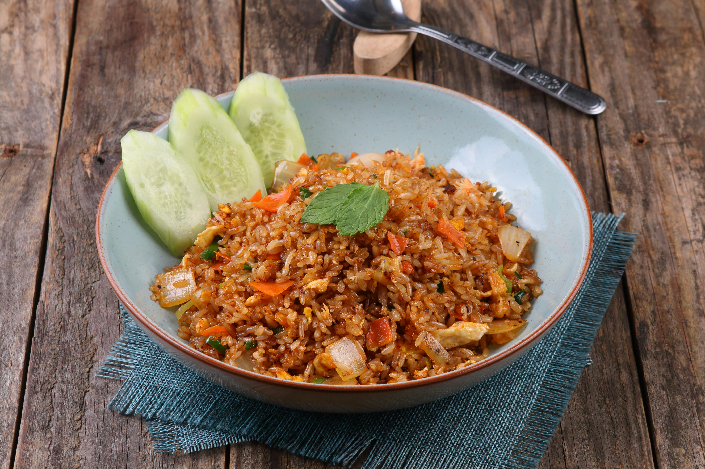

Home
Nasi Goreng (Indonesian Fried Rice)

Nasi goreng is one of those dishes that feels effortless but delivers so much comfort and flavour—it’s the kind of meal that comes together from simple ingredients yet tastes like something special. Traditionally, it’s a way of giving leftover rice a second life, transforming it with garlic, savoury sauces, and a bit of heat into something smoky and deeply satisfying. The magic really comes from frying everything together in a hot pan so the rice picks up that slightly crispy texture, while the sweet-salty balance of sauces coats every grain. Whether it’s made as a quick lunch or a late-night meal, nasi goreng has that warm, homemade feel—simple, adaptable, and always delicious.
Ingredients
- 2 cups cooked rice (preferably day-old)
- 2 eggs
- 2 cloves garlic (or 1 tsp garlic powder)
- 1 small onion, chopped
- 1–2 tbsp soy sauce
- 1 tsp sweet chilli sauce (optional)
- 1 tsp chilli flakes (optional)
- 1 tbsp oil
- Salt & pepper
- Optional: cooked chicken, prawns, or vegetables
Steps
- Prep the rice: Break up any clumps so it fries evenly.
- Cook eggs: Heat a little oil, scramble the eggs, then set aside.
- Fry aromatics: In the same pan, heat oil and cook onion until soft, then add garlic.
- Add protein (optional): Toss in chicken, prawns, or veg and cook through.
- Add rice: Tip in the rice and stir-fry on high heat.
- Season: Add soy sauce, sweet chilli, chilli flakes, salt, and pepper. Mix well.
- Finish: Stir the eggs back in and cook for another minute until everything is hot and slightly crispy.
Serve and enjoy!